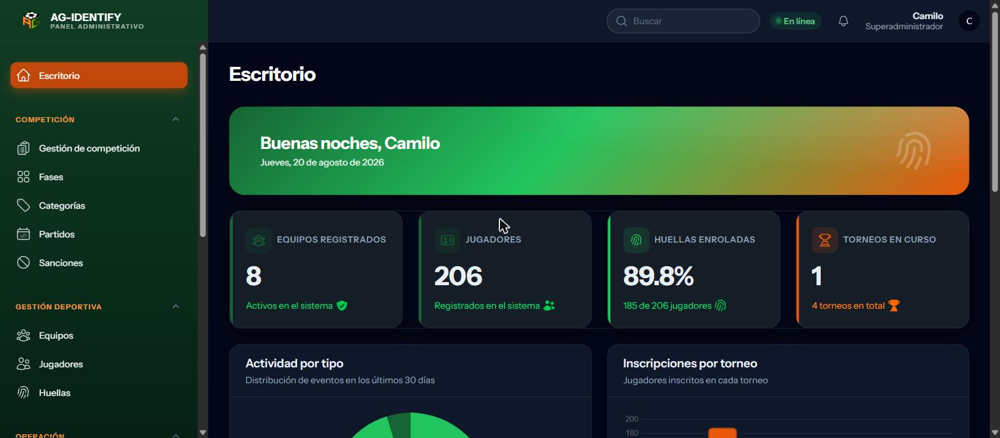

01
AG Identity
En un torneo de cientos de jugadores, comprobar que quien salta a la cancha es quien está inscrito se hacía con papel y buena fe. Construimos un sistema que lo verifica por huella dactilar sin conexión, porque en una cancha no hay internet: panel web para enrolar, API, aplicación de escritorio y un lector USB.